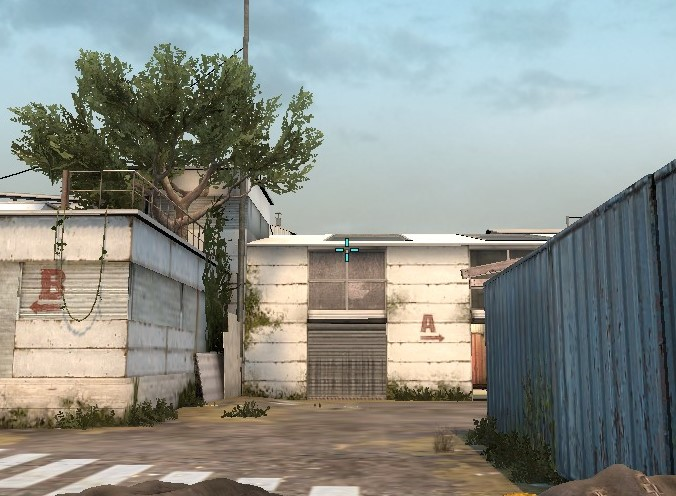
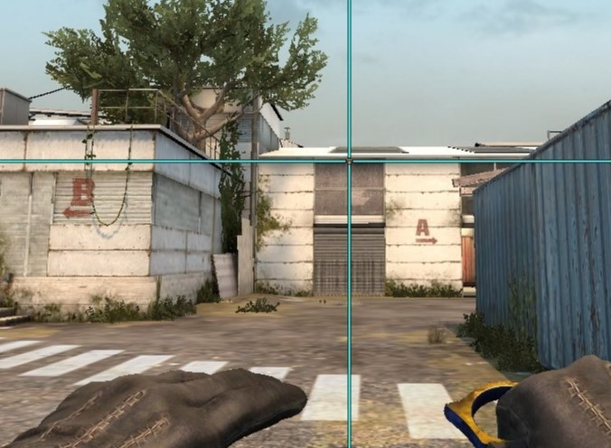

Grenade Line Up Crosshair
Line up grenades easy!
Paste into console 1 line at a time
alias "nadetoggleon" "cl_crosshairsize 255; bind g nadetoggleoff"
alias "nadetoggleoff" "cl_crosshairsize 4; bind g nadetoggleon"
Note: The default key for this script is G. This can also be changed.
 